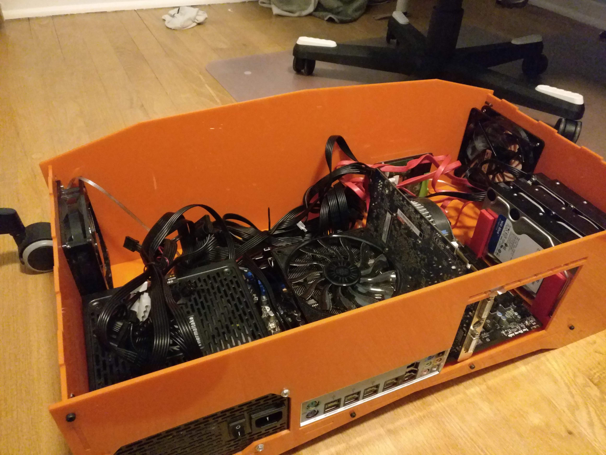
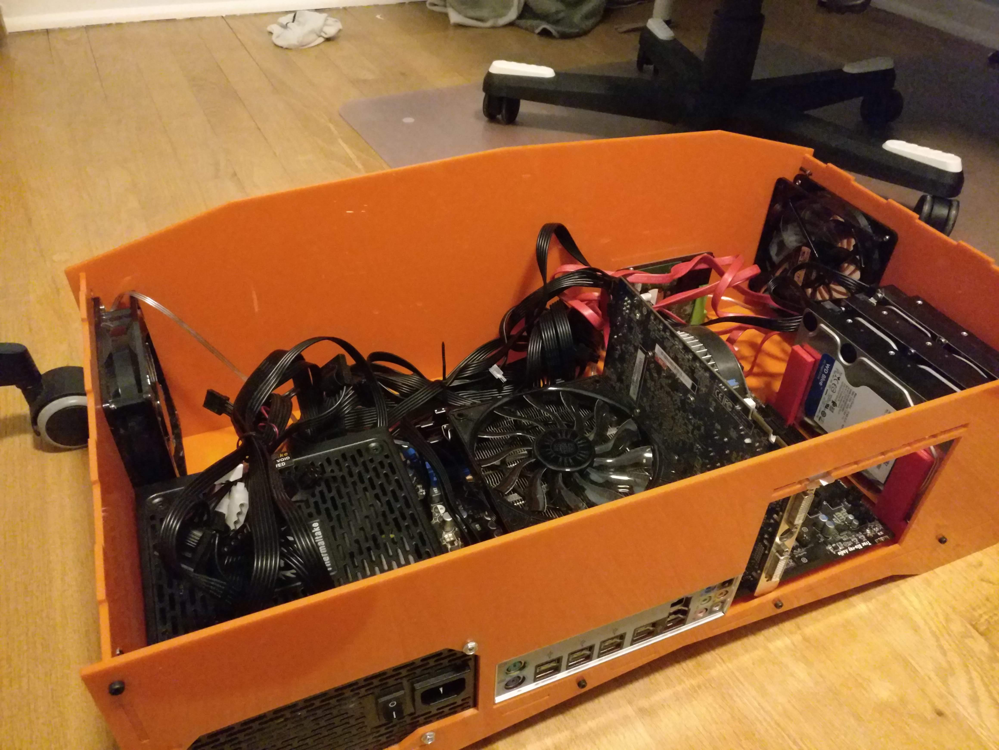

LACC: Lasercut ATX Computer Case
I’ve been working on this project for over a year now, but I can finally share it comfortably. Presenting: LACC Lasercut ATX Computer case
This all came about because I needed a computer case (for a computer) and I went looking online to see if anyone had made one that could be cut on a laser cutter. Much to my dissapointment, I couldn’t find any! So I said fine, I’ll freaking build one.
You can download all the files here from this blog, but I’ve also uploaded the design to github and thingiverse for… marketing/posterity.
I hope it proves useful as a template for further customization. Adding extra art work to be etched into the front/side/top with a laser should be really easy to do.
 

This is a full sized ATX computer case you can laser cut (and probably cut using a CNC but I don’t have one of those)
It should fit any ATX compliant motherboard, but I’ve only tried the one motherboard I have.
It has space for 3x 3.5” hard drives and a 2.5” hard drive, which are held by seperate 3d printed modules.
The entire design was done in Fusion 360. You can view it / download it here
Materials
Case
- 5x sheets of 24” x 12” sheet of 1/8” or 3mm acrylic or MDF*
- 26x M3 nuts
- 20x M3x16 screws (for holding case together)
- 6x M3x12 standoffs (for motherboard)
- 6x M3x4 screws (for standoffs)
- 2x 120mm Computer Fan
- 4x 6-32 screws for ATX power supply
*You might worry about MDF catching fire, but it catches fire at 200C
Hard Drive Bays
- 2x of the 3.5” drive holder parts
- 2x of the 2.5” drive holder parts
- 6x M3x10 screws
- 6x M3 nuts
Models Used
- Accurate Blank Motherboard & PCIe Card Models by subtec
- 120mm PC Case Fan by Ollie Keattch
- Power supply (mine)
- Hard Drive 2.5” and 3.5” (mine)
License
Creative Commons Attribution-ShareAlike 4.0 International
You are free to use, sell and remix freely as long as any modifications you make are also shared under this same license
Next revision
So far it’s working pretty well, but I have a few extra things that I need to change
- The tabs between the PCI-E cards are wayyyy to tiny. I need to make them bigger
- There is no power button… My mobo has one built in, but yours may not.